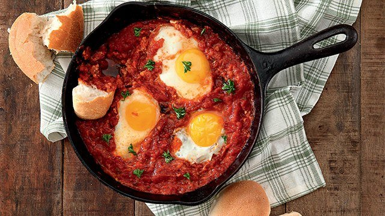

Egg Omelette
Ingredients:
- 2-3 Eggs
- 1 medium tomato
- 1 medium chili pepper
- 1 big spoon of butter
- 1 tablespoon of salt and pepper
Instructions:
- Crack the eggs into a bowl.
- Add 1 tablespoon of salt and pepper on the eggs.
- Cut the tomato and chili pepper into small cubes.
- Add the tomato and chili pepper cubes into the bowl.
- Whisk all the components together.
- Put on the oven fire with the pan on it.
- Add the butter to the pan until it melts.
- Add the egg mixture into the pan and leave them to cook for 10 minutes.
- Turn off the fire and serve the egg omelette on a plate.
Shakshouka
Ingredients:
- 2-3 Eggs
- 2 large tomatoes
- 1 medium chili pepper
- 1 medium onion
- 1-2 big spoons of butter
- 2 tablespoons of salt, black pepper, and cumin
- 1 tablespoon of tomato paste
Instructions:
- Put the pan on medium to low heat.
- Add 1-2 big spoons of butter to the pan to melt them.
- Cut the onion into small cubes then add them to the pan and stir them for 2-3 minutes.
- Cut the tomatoes and chili pepper into small cubes then add them to the pan and stir them for 2-3 minutes.
- Add the tomato paste with 1/4 water cup to the pan to make a sauce texture.
- Add the 2 tablespoons of salt, black pepper, and cumin.
- Finally, Add the eggs and cover the pan for 5-10 minutes.
- Turn off the heat and serve the shakshouka with the pan.
- serve them with Egyptian baladi bread

Ta'meia
Ingredients:
- 2-3 Cups of cooked fava beans
- 1-2 cloves of garlic
- 1 medium chili pepper
- 1 medium onion
- 1 medium bunch of dill, parsley, and fresh coriander
- 1/4 cup of dried coriander
- 1-2 tablespoons of salt and baking powder
- a bunch of sesame seeds
Instructions:
- Get the blender and blend the fava beans with garlic, chili pepper, onion, dill, parsley, fresh and dried coriander, salt, and baking powder until smooth
- Put a deep pan filled with oil on high heat.
- Form small patties from the ta'meia dough and sprinkle some sesame seeds on both faces of them.
- Deeply fry them in the pan for 5 minutes.
- Get them out into a plate that has paper towels to absorb the excess oil from the fried ta'meia
- serve them with Egyptian baladi bread

Mashed Potatoes
Ingredients:
- 2-3 medium potatoes
- 1 medium chili pepper
- 2 big spoons of butter
- 2 tablespoons of salt, black pepper, cumin, and chili
Instructions:
- Cut the potatoes into small cubes and the chili pepper into thin slices.
- Boil 2-3 cups of water in a pot.
- Add the potato cubes to the boiling water for 10-15 minutes with a pinch of salt.
- Add 2 big spoons of butter into the bowl along with 2 tablespoons of salt, black pepper, cumin, and chili.
- Rinse the potato cubes and add them to the bowl.
- mash them with a fork or potato masher then stir them so that the butter and seasonings are mixed well and the potato mixture be smooth.
- Serve with Egyptian baladi bread.